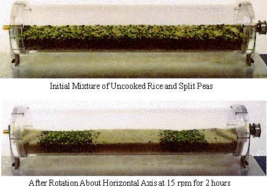
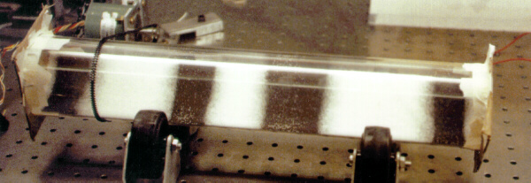
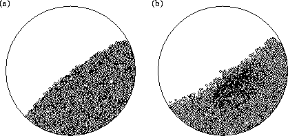

Observations:
James Kakalios (U. Minnesota)

Steve Morris (U.Toronto)

White salt and black hobby sand
"Molecular dynamics" simulations
G.Ristow (radial separation)

(a) initial state (b) after 100 rotations